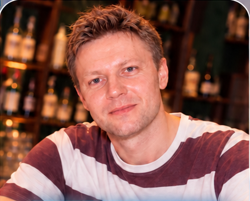

学习进度 · Изучено букв0 / 33
你好！从字母开始 👋
欢迎进入俄语的世界
Аа第一个字母 · Первая буква
33个字母
10元音字母
21辅音字母
俄语字母表共有 33 个字母：10 个元音字母、21 个辅音字母，以及 2 个不单独发音的符号（Ъ、Ь）。本课通过字母名称、例词和现有录音逐步学习。

玛格丽塔 & 安东我们的俄语教师 · 你的学习伙伴认识每个字母 🔤
先听字母名称，再听单词，然后跟读
字母 1 / 33
Аа
字母名称：а
Арбуз
西瓜
📚 更多例词 · 现有课程录音
点击 🔊 听字母名称；录音可回放，不会自动评分。
1 / 33
字母复习 📖
点击任意字母播放它的名称
🟣 元音字母 · 10 个
А、Е、Ё、И、О、У、Ы、Э、Ю、Я。它们是元音字母，并非所有情况下都只对应一个音。
🔵 辅音字母 · 21 个
请注意 Ж、Ц、Ч、Ш、Щ 等字母的发音，边听边模仿。
🟠 不单独发音的符号 · 2 个
Ъ（硬音符号）和 Ь（软音符号）本身不单独发音。
💡 听写和朗读要分开练习：能认出字母，不等于已经会准确发音。
听力小测验 🎧
听字母名称，选择正确的俄语字母
第 1 / 8 题
听一听，选一选
按下面的按钮收听录音学习成果 🏅
你的第一个俄语里程碑
离目标越来越近！
完成字母学习和听力练习后，就可以获得第1课完成标记。
0 / 33已听过字母名称
先听完33个字母，再通过8题听力测验（至少6题正确）。